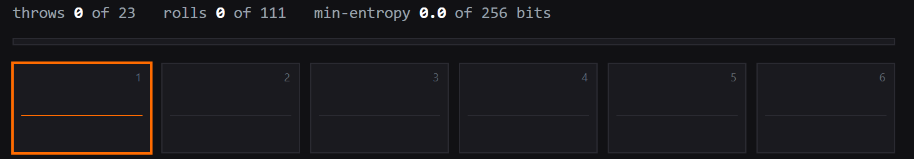
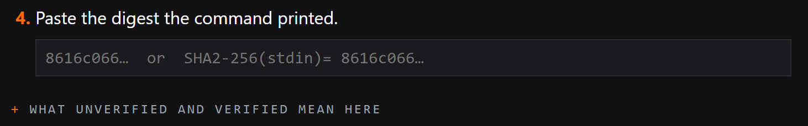
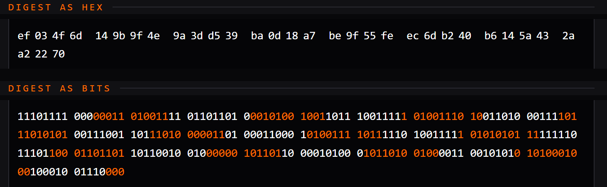
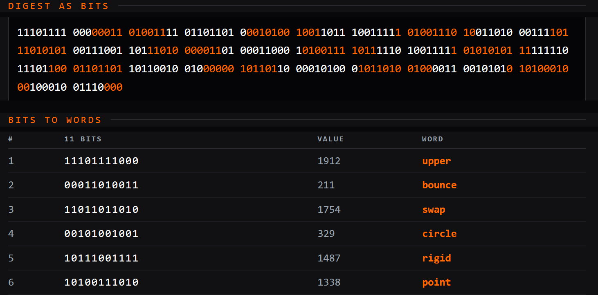
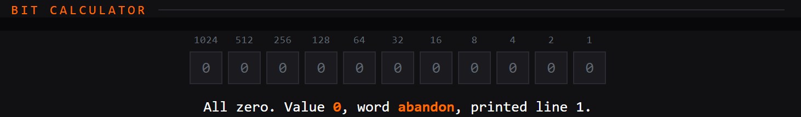

Don't trust, verify your own entropy.
rolls39
Rolls39 is a utility that enables you to verify every step from dice rolls to a BIP-39 seed phrase used by most popular hardware wallets.
The beauty of BIP-39 is that it converts 256 bit numbers into 24 words that are easy to read, input, and store.
The danger of BIP-39 is that the words reveal nothing about the randomness that was used to create them.
Many popular implementations of BIP-39 that use an external source of entropy rely on the well-known and well-established hashing function SHA-256 to convert some source of randomness into the 256-bit number that is translated by BIP-39 into 24 words. The output of SHA-256 is always 256 bits whether the input is 1 byte or 1 GB. Other implementations rely directly on True Random Number Generators to create 256 random bits. In either case, the link between the input and the output is unknowable by examining just the output.
Look at the following twenty-four words. This is a valid seed phrase with a correct checksum.
Does it look random to you?
Here it is represented in hex (base-16) before the checksum. Do you see any pattern?
And here are all 256 bits:
Any way you examine this, it appears random. Use these in any wallet and you will restore the same valid Bitcoin private keys without any warnings.
But the number above is not random. It is the SHA-256 hash of a single character: 1. In other words it is trivial to guess, but until I told you so, there was no way to know. No amount of staring at the three blocks of data above would give you a clue.
The only way to know for sure that a seed phrase is secure is to verify yourself that sufficient randomness was used to generate the word list.
how attacks work
Nobody attacks a 256-bit number by searching 256 bits. They search the inputs that could have produced it. How long that search takes depends entirely on how the input was made, and how the input was made is the one thing the output will never tell you.
There are roughly as many possible seed phrases as there are atoms in the observable universe. But if the input randomness is insufficient, the search space collapses.
Here is how the size of the input randomness stacks up against a brute force attack with one graphics card or a farm of half a million of them.
| Size of the input space | One GPU | Large farm |
|---|---|---|
| 1 | instant | instant |
| 2^32 | 18 minutes | 2 milliseconds |
| 2^40 | 3 days | half a second |
| 2^64 | 146 thousand years | 107 days |
| 2^256 | out of reach | out of reach |
The phrase at the top of this page sits in the first row. Documented firmware failures have landed between 2^32 and 2^40. A seed built from 100 or more rolls of a six-sided die sits in the last.
Out of reach means millions of times greater than the age of the universe.
don't trust, verify
A seed phrase carries no record of where it came from. Words from dice and words from a broken program are indistinguishable, restore alike, and pass every check a wallet can run. The size of the space it was drawn from is the only thing protecting you, and it becomes invisible the moment the words are generated.
Which leaves one way to know your seed is unguessable. You have to verify the randomness yourself.
This should not be new to Bitcoiners. Don't trust, verify is at the heart of the movement. Yet when it comes to the most important 24 words in your setup, you are asked to take it on faith that they incorporate sufficient randomness. It doesn't need to be this way.
Check the phrase above
You can run SHA-256 on virtually any computer. In a terminal:
That is the hex block above, without spaces. Splitting it into groups of eleven bits and looking each group up in the standard wordlist gives the twenty-four BIP-39 words. The tool below walks through that lookup and lets you check every group by hand.
Run it again with a trailing space after the 1 and you will get a completely different, but still trivially guessable, result.
BIP-39
There are 2^11 (2048) words in the BIP-39 standard. See github.com/bitcoin/bips/blob/master/bip-0039/bip-0039-wordlists.md
Each one is numbered 1-2048 (or 0-2047 if you prefer to work in binary) and has a unique first four characters. It only requires a simple summation and a lookup table to convert 256 bits to a BIP-39 seed phrase.
Rolls39
Rolls39 was created to help you see every step of the process from dice to seed phrase. It was written for the bitcoiner who is considering self custody but is concerned about the security of their seed phrase. If you follow the steps provided, you will gain confidence that the seed you generated is one random atom in a universe of possibilities.
download and verify
The file
rolls39.html, version v1.0.0, 103,167 bytes.
github.com/rolls39/rolls39/releases/tag/v1.0.0
SHA-256 digest:
Check it before you open it
Pick your system, run the command in the folder where you saved the file, and compare the result to the SHA-256 digest above.
GitHub also computes that digest when the file is uploaded, and shows it on the release page. This gives you a comparison to a page this project does not control.
This project also uses Github's immutable releases. Once published, the file cannot be replaced, added to, or deleted, and the tag cannot be moved. Each change means a new release, a new version, and a new number.
For a check that does not depend on GitHub at all:
Immutable releases carry a signature recorded in a public transparency log. That command verifies against the log, using tooling this project has no control over.
If your file produces a different number, you have a different file.
Running it
Save the file. Turn off your network. Open the file from your disk.
The page makes no network requests and stores nothing. Running it offline means you do not have to take that on faith.
For a seed that will hold money, work on an amnesic operating system and run offline. Amnesic means it boots from a USB stick, writes nothing to your internal drive, and forgets everything at shutdown. Tails is the usual choice, and the tool includes instructions for it.
Practice on your everyday laptop as much as you like. Do not fund what you make there.
why roll at all
A hardware wallet has three jobs
It creates a seed. It stores that seed. It signs transactions with it.
Storing and signing are the main reasons to own one and provide real benefit for interacting with the Bitcoin network in a secure manner.
Creating the seed is a one-time setup. It is handled by hardware wallets for convenience, not necessity.
It is also the only one of the three that you cannot check. The device shows you words. You cannot verify what the firmware did. Where those words came from is a claim you are asked to take on faith, and you have no way to test it.
In 2026, the Coldcard firmware bug showed what happens when that claim turns out to be false. A weak source of randomness produced seeds for five years before anyone noticed, and people lost coins.
Owners who had generated their seed from their own dice rolls were unaffected. The flaw was in how the device produced randomness, and their randomness had not come from the device.
Any device could have shipped that bug, and you would have had no way to know.
Dice and lookup tables have no firmware.
You already work this way
Bitcoiners run their own nodes rather than accept a company's word for the state of the chain. They confirm receive addresses on the device screen rather than accept the computer's word for them. Checking instead of trusting is the habit the whole practice is built on.
For some reason, the Bitcoin community has not applied this same habit to seed phrases. Twenty-four words appear on a screen, and everyone writes them down. Many cite the UX or UI burden and the technology behind silicon True Random Number Generators (TRNGs) as reasons not to verify the seed yourself. But if your entire life savings depends on a set of words that you can prove beyond a shadow of a doubt were generated by an unrepeatable random process that takes just a few minutes, I don't buy the objection. If you're here you've already wrapped your head around securing your wealth in magic internet money on an immutable public ledger secured by a decentralized global network using open source software that no one controls. Spending a few more minutes to ensure that you know that your seed phrase is unguessable seems like a low hurdle.
What this page does about it
You roll physical dice. You type in what came up. The tool converts the rolls into a seed phrase and shows the arithmetic at every step, in a form you can confirm without believing anything the tool says.
Three checks, none of which require trusting this software:
Reproduce the dice-to-hash-digest conversion with utilities already installed on your computer. All of the instructions and a utility to do the comparison are built into the page.
Follow that output down to the individual bits, and check the mapping against the tables on the page.
Look up every word in a printed wordlist, by hand, and confirm the tool picked the same ones.
There is even a utility to verify the checksum independently if you are so motivated.
Then store your seed phrase and use it in your hardware wallet. Its own generator never needs to be trusted.
common objections
Other tools already do this
They do, and they work. Several are listed at the bottom of this page.
What none of them do is walk you through it step-by-step. They take your rolls and hand back a phrase, and if you want to know how, the source code is available. Reading a program is a different task from being shown the arithmetic and given the means to check it.
This page is about clarifying a process that already exists so that the layperson can validate every step.
Tools disagree about what happens between your rolls and your bits, and the conventions are incompatible, so the same rolls entered into two tools can produce two different phrases. Both are valid. But a phrase that looks right tells you nothing about the path that produced it, so unless you are able to audit the code, you are still taking a leap of faith.
Nobody is going to roll dice
Self-custody demands personal responsibility.
There is friction in running your own node, verifying a receive address on the device screen, keeping a signing device off the network, storing a phrase somewhere it survives a house fire, or building a multisig across vendors.
Adoption depends on interfaces that guide you along the correct path, explanations that make the point clear, and most importantly a reason to care.
The dice approach has been around for years. The reason to care was highlighted by the 2026 discovery of the Coldcard firmware bug. This tool is an attempt to improve the guidance and explanation.
Self-custody will never be for everyone. However, anyone who does go down that path should be able to generate a seed with full confidence, without assembling the method themselves from forum posts and half-matching guides.
My hardware wallet vendor advises against this
Several do, and their reasoning is sound. A seed created on a networked computer can be copied without you knowing. A seed written to a hard drive is vulnerable. Those risks are real and they have cost people money.
The answer is the amnesic operating system, run offline. It keeps nothing after shutdown and has no network connection while you work, which removes the risk the warning is about.
Do not skip it. Practice online all you want. Generate offline when it counts.
My dice are not perfectly fair
They are not, and it costs less than you would think.
The largest careful count of ordinary dice, 315,672 rolls recorded by Zacariah Labby in 2009, found high faces coming up about 0.3 percent more often than chance. That was small enough to be statistically indistinguishable from fair.
This tool assumes by default that one face comes up 20 percent of the time instead of 16.7 percent. That is roughly seventy times more generous than what Labby measured, and it covers dice with a visible defect.
Being that pessimistic costs eleven extra rolls. A fair d6 needs 100 rolls to reach 256 bits. At the assumed imbalance it asks for 111. Three extra throws of five dice.
The credit the tool gives you is min-entropy, the pessimistic measure, which assumes an attacker guesses the most likely outcomes first. Rolling more is cheap. Rolling too few cannot be undone once the seed holds money.
You may see 99 rolls quoted elsewhere. 99 rolls of a fair d6 comes to 255.9 bits. 100 gets you past 256.
Procedure is where care actually pays. If you throw five dice and sort them by value before writing them down, that single throw discards more randomness than an imperfect die costs across the entire seed. Read them in a fixed order, left to right, and take every result you get.
what using it looks like
Five steps. Each one shows what you will see on screen.
Enter your throws

Confirm the conversion

This is the step that makes the rest of it checkable. Everything after it follows from this number.
Follow the number down to the bits

Watch the bits become words

Check it by hand

what it does not do
It converts rolls to a seed phrase. That is all it does.
It derives no addresses. It has no elliptic curve code, so it cannot compute a public key or a receive address from your seed. It does not implement BIP-32 or BIP-44, the standards wallets use to turn one seed into many keys. It knows nothing about balances, transactions, or the network.
Your hardware wallet does all of that, and it is what the device is for.
The absence is deliberate. It is what keeps the file small enough for one person to read in an afternoon and confirm there is nowhere for a secret to leak.
ways this goes wrong
Sorted roughly by how often people do it.
Generating on a machine that is online. A seed made on a networked computer can be taken without any sign that it happened. Offline, on an amnesic system, or do not fund it.
Keeping the roll record. Your rolls are your seed. A photo of the worksheet, a note on your phone, a text file you meant to delete: any of these is the seed in another form. Destroy the record once the phrase is written down and confirmed.
Stopping short. The counter is not a suggestion. If it says you have 240 of 256 bits, you have a seed that is 65,000 times easier to guess than the one you meant to make.
Typing the phrase somewhere to check it. Not into a website, not into a phone, not into a password manager. The device, a piece of paper, or a metal backup are the only places the finished phrase belongs.
Trusting a copy you did not hash. Including a copy from a friend, a mirror, or a search result. Hash it first.
other tools
These are not endorsements. None has been audited by this project, and listing one is not a claim that it is safe to use. They are here to show the variety of methods for turning dice into a seed phrase, and to let you cross check the approach used here.
Approaches vary widely. Some run in a browser, some are scripts you run yourself, one ships with a hardware wallet. They differ in how they turn dice digits into bits, how many rolls they ask for, and how much of the work they show you. Read what a tool does before you trust it with a seed.
- Ian Coleman BIP39, iancoleman.io/bip39
- bitcoiner.guide seedtool, bitcoiner.guide/seedtool
- Coldcard rolls.py, in the Coldcard firmware docs
- dice2bip39.com
- frozensecurity.com/tools/dice-entropy
- github.com/Engelberg/dice-to-bip39
- github.com/veebch/Bip39-Dice
- github.com/bayanimills/seedwitness
Links checked 16 August 2026. This list is not exhaustive, and nothing on it is maintained by this project.
source
github.com/rolls39/rolls39
MIT licensed. One file, no dependencies, no build step.
Three test suites run against the conversion code: test-core.js with 221 assertions, test-mode.js with 244, and fuzz.js with roughly 91,000 randomized checks. npm install then npm test runs all of them. They are in the repository and you can read what they check.
Releases are tagged and immutable. The hash on this page belongs to a tagged release, and not to whatever is currently on the main branch. Every release carries a signed attestation in a public transparency log, so a copy can be checked without taking GitHub's word for anything.